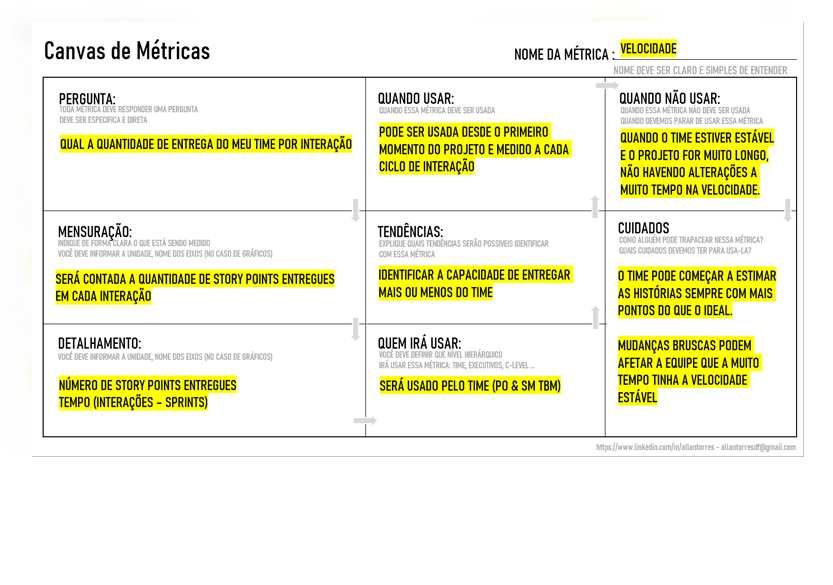

Canvas de Métricas
Facilitando sua vida
Esse canvas foi desenvolvimento para que possa ser usado no desenvolvimento de métricas. Caso queira melhora-lo ou evoluir esse canvas entre em contato com allantorres[at]gmail.com
Fazer o download

 Fazer o download
Fazer o download